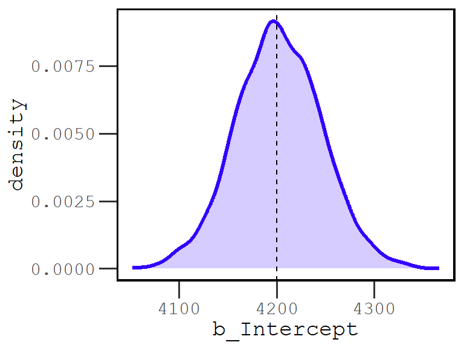
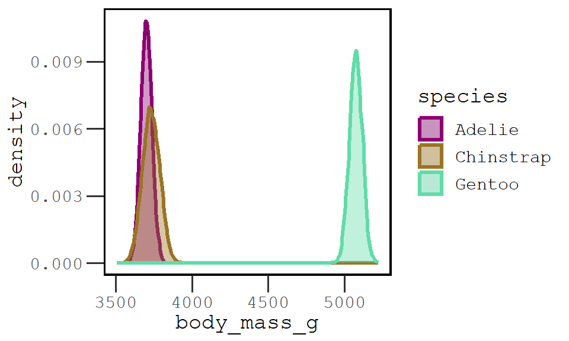
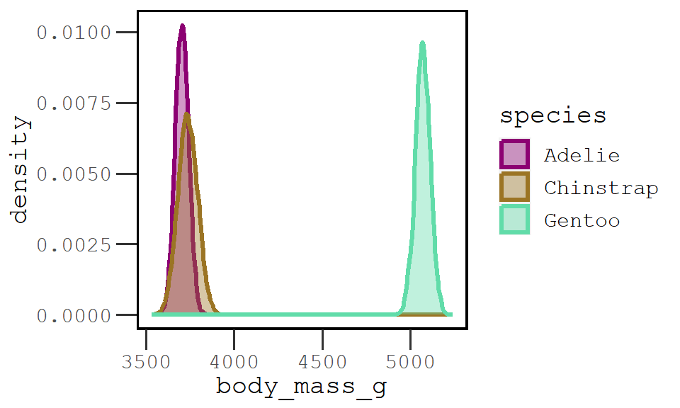
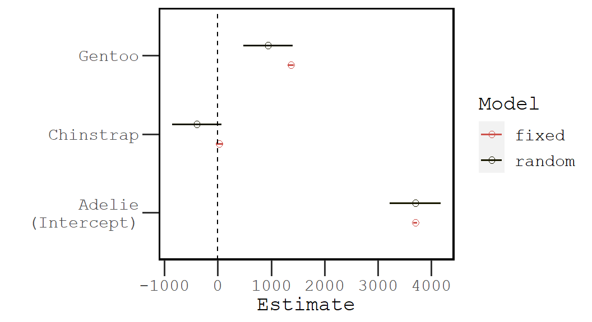
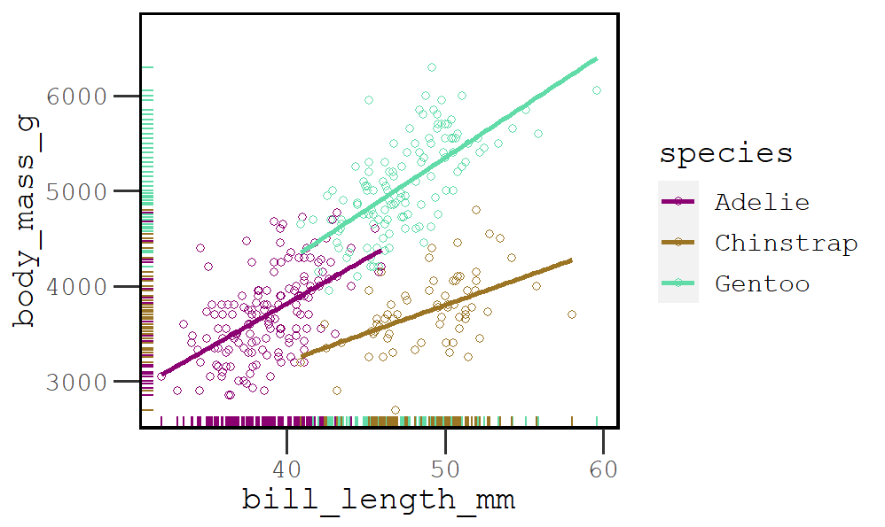
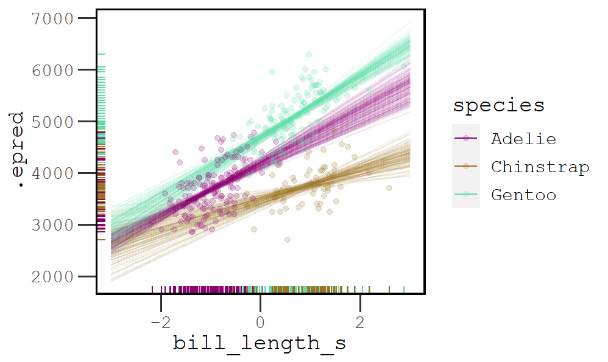

Multilevel models are a kind of statistical model that estimate parameters at more than one level. They are very useful kind of model because they are suited to the hierarchical and nested organization of the world around us. In this post, I will demonstrate how to build, describe, and compare multilevel models using tools from brms.
options(mc.cores = parallel::detectCores(), scipen = 0)
#install.packages('rstan')
#install.packages('brms')
library(brms)
library(tidybayes)
library(tidyverse)
library(modelr)For this demonstration, let’s model the palmerpenguins dataset made available on github by Allison Horst. These data contain morphometrics for three species of penguins – Chinstrap, Gentoo, and Adelie – and the names of the islands they inhabit in Antarctica.
#remotes::install_github('allisonhorst/palmerpenguins')
library(palmerpenguins)
data('penguins')
d <- penguins
head(d)# A tibble: 6 × 8
species island bill_length_mm bill_depth_mm flipper_l…¹ body_…² sex year
<fct> <fct> <dbl> <dbl> <int> <int> <fct> <int>
1 Adelie Torgersen 39.1 18.7 181 3750 male 2007
2 Adelie Torgersen 39.5 17.4 186 3800 fema… 2007
3 Adelie Torgersen 40.3 18 195 3250 fema… 2007
4 Adelie Torgersen NA NA NA NA <NA> 2007
5 Adelie Torgersen 36.7 19.3 193 3450 fema… 2007
6 Adelie Torgersen 39.3 20.6 190 3650 male 2007
# … with abbreviated variable names ¹flipper_length_mm, ²body_mass_gStart simple
Let’s model penguin body mass (body_mass_g). A simple starting model would be to estimate the central tendency and variation in body masses across all penguins. We can do this by estimating the parameters mu (\(\mu\)) and sigma (\(\sigma\)) with a Gaussian family.
For now, we will use the default brms priors. You can view them by calling the model formula, data, and family:
get_prior(body_mass_g ~ 1,
family = gaussian(), data = d) prior class coef group resp dpar nlpar lb ub source
student_t(3, 4050, 889.6) Intercept default
student_t(3, 0, 889.6) sigma 0 defaultThe model formula is truly as simple as it can be: body_mass_g ~ 1. We estimate a single fixed intercept.
mod0 <- brm(family = gaussian(), data = d,
body_mass_g ~ 1)We can examine the posterior estimates using posterior_summary(), which returns all fixed and random effect estimate by a <brmsfit> object. According to this model, the mean body mass (g) of all the Penguins is 4200.43, surrounded by 44.09 grams of error. This value is comparable to the value computed using base R (mean = 4201.75). This model also estimates a sigma value of 802.90, which is comparable to the standard deviation (sd = 801.95)
posterior_summary(mod0) Estimate Est.Error Q2.5 Q97.5
b_Intercept 4202.24405 43.93026876 4115.67686 4289.96055
sigma 804.00584 31.13987362 746.30603 865.65799
lprior -15.39316 0.03575543 -15.46696 -15.32878
lp__ -2781.47280 0.98978812 -2784.21080 -2780.48072If we generate 4000 draws from this model, and graph them, the distribution looks something like this:

Species variation, fixed and random
A sensible biologist might point out that body mass probably varies across each species of penguin. We can assess this by adding a fixed effect of species to our model that will estimate the body mass for each species. It will not, however, help us understand how body mass varies within each species. To do that, we need estimate random intercepts for each species group. We’ll fit both models to illustrate the difference.
For the fixed effect model, we add the species factor to our model formula:
body_mass_g ~ 1 + species
to estimate a fixed intercept for each of the species groups in the dataset.
mod1a <- brm(data = d, family = gaussian(),
body_mass_g ~ 1 + species)We can examine the estimates by calling the model object inside the fixef() function.
fixef(mod1a) Estimate Est.Error Q2.5 Q97.5
Intercept 3701.17778 36.52792 3629.7886 3774.4572
speciesChinstrap 31.57681 67.58873 -101.7963 163.4163
speciesGentoo 1374.24868 54.51842 1269.7078 1482.2137Here we see that the body mass of Adelie – the reference category for Intercept – and Chinstrap differ by just over 30 grams, while the mean for Gentoo is more than 1000 grams larger. Just how much these body mass measurements overlap is easier to see if we graph the posterior.

To estimate random intercepts for each species, rather than fixed intercepts, we use the following model formula:
body_mass_g ~(1|species)
mod1b <- brm(data = d, family = gaussian(),
body_mass_g ~ (1|species))This model estimates a “global” fixed intercept:
fixef(mod1b) Estimate Est.Error Q2.5 Q97.5
Intercept 4130.29 459.9165 3156.383 5029.404and then separate random intercepts for each species, reported as differences from the global intercept:
ranef(mod1b)$species
, , Intercept
Estimate Est.Error Q2.5 Q97.5
Adelie -427.7364 461.8709 -1340.36322 554.2313
Chinstrap -394.6471 461.6474 -1314.66820 588.0133
Gentoo 941.2958 459.9377 28.34081 1914.2185Ultimately, this model will produce posterior distributions that look very similar to the fixed effect model:

However, there is a key difference between the fixed and random effects models. The random effects model has a much greater amount of uncertainty when compared to the fixed effects. This can be seen in the following dotplot, which shows the coefficient estimates for each model and the error around these estimates.

There is a tendency to view high uncertainty as a marker of defeat. This should not be the case. Having a better estimation of model uncertainty (combined with good theory) is a necessary condition for valid causal inference.
Random slopes
Different penguin species have different bill lengths. It certainly seems possible that these differences might predict body mass. We can examine this descriptively.

If we use a line to describe these relatioships, we can see that some slopes are steeper than others. Chinstrap penguins, for example, seem to have more variation in the bill length, body mass relationship, especially compared to Gentoo, and then gives them a dampened slope.
We build on a random intercepts model by adding random slopes to the |species portion of the brms syntax:
body_mass_g ~ (1 + bill_length_mm|species)
Before we fit the model, we need to rescale the bill length variable. Although we are not setting any priors in this example, rescaling will makes it much easier to set sensible priors.
d$bill_length_s <- scale(d$bill_length_mm)Now let’s fit the model.
mod2 <- brm(data = d, family = gaussian(),
body_mass_g ~ (1+bill_length_s|species))When we examine the random effects, we see estimates of how much each species differs from the global average (Intercept) and an estimate of the change in body mass for each unit change in bill length (slope).
ranef(mod2)$species
, , Intercept
Estimate Est.Error Q2.5 Q97.5
Adelie 252.8141 525.0505 -774.2875 1338.7514
Chinstrap -458.4793 531.3710 -1521.3775 634.3207
Gentoo 758.4599 522.1562 -255.0431 1838.9875
, , bill_length_s
Estimate Est.Error Q2.5 Q97.5
Adelie 507.2517 62.37121 385.7620 628.5149
Chinstrap 301.4510 72.10868 160.8892 439.3606
Gentoo 595.2761 60.96895 477.4987 712.3207These relationships are much easier to understand if we make predictions. To do this using tidybayes, first call the data frame d and group_by each factor. In this case we only have species. Then, using the modelr package, we create a data_grid. These are the values of bill length that we want to make predictions for. Remember that bill length has been rescales, where a value of 0 is equal to the mean.
d %>% group_by(species) %>%
data_grid(bill_length_s = seq(-3,3, length.out=40)) %>%
head()# A tibble: 6 × 2
# Groups: species [1]
species bill_length_s
<fct> <dbl>
1 Adelie -3
2 Adelie -2.85
3 Adelie -2.69
4 Adelie -2.54
5 Adelie -2.38
6 Adelie -2.23We place the model object inside add_epred_draws to make our predictions. This returns a tidy data frame where the column .epred contains the predictions for each value of bill length.
d %>% group_by(species) %>%
data_grid(bill_length_s = seq(-3,3, length.out=40)) %>%
add_epred_draws(mod2, ndraws = 100) %>%
head()# A tibble: 6 × 7
# Groups: species, bill_length_s, .row [1]
species bill_length_s .row .chain .iteration .draw .epred
<fct> <dbl> <int> <int> <int> <int> <dbl>
1 Adelie -3 1 NA NA 1 2899.
2 Adelie -3 1 NA NA 2 2805.
3 Adelie -3 1 NA NA 3 2570.
4 Adelie -3 1 NA NA 4 2435.
5 Adelie -3 1 NA NA 5 2678.
6 Adelie -3 1 NA NA 6 2823.We can use that tidy data frame to graph lines, or intervals, just as we normally would using ggplot. Let’s recreate Figure 5.

Endnotes
As with all MCMC models, your results may differ slightly than mine. I did not bother to set the
seed =parameter inbrm, so you’ll not be able to reproduce each decimal exactly.I’ve hidden many of the plotting details for brevity. I can elaborate more on these in future posts. For now, check out the work of Solomon Kurz to learn more about using
tidyverseandtidybayesto visualize Bayesian models.